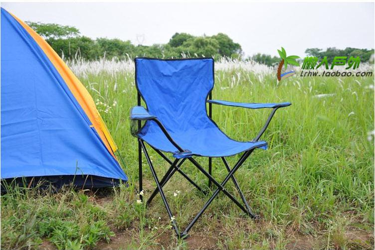

[转寄/推荐][转贴][删除][修改][设置可RE属性][上一篇][返回讨论区][下一篇][回文章][同主题列表][同主题阅读][从这里展开]
发信人: liusalisa (沨枫砜风), 信区: outdoor
标 题: 第一届野协百米定向大赛开始报名了~
发信站: 饮水思源 (2012年06月26日00:08:33 星期二)
号外号外!!!
2012野外生存协会小学期倾情奉献百米定向大赛，现面向全体交大学生火热报名中！
画外音
“咦，又有定向比赛啦！是啥，百米定向？！”
“神马玩意？”
“咳咳，既然乃们诚心诚意地发问了，那偶就大发慈悲地告诉乃们。
偶，
不是疯狂马拉松式的校园定向，
不是各种二各种重口味的趣味定向，
不是浪漫奔跑在街头园区的城市定向、公园定向，
偶，
是短小精悍内涵丰富魅力无穷5分钟让你领略头脑高度集中四肢快节奏调节速度与方向的紧
张感的定向界新宠儿——（呼，让偶喘口气）”
“==……”
“——百!米!定!向!！！是也”
（无节操对话over，切入正题）
活动名称：上海交通大学百米定向大赛
活动简介：本次活动为交大首次百米定向比赛，由野协主办，野协定向队制图，在70*40的
草坪上人工设置障碍线，参赛选手依照地图上点标的顺序在每个点进行手动打卡，并到达
终点，其间禁止跨越障碍线。此次活动兼具专业性与可参与性，对以往的定向运动进行创
新，旨在为你的小学期带来焕然一新的定向体验和运动的快乐。
定向百科：百米定向，也称为微型定向，最初由中国人创造，目前也只有中国和俄罗斯开
展了此项目，但这项“短小精悍”的运动潜力无穷,尤其是对参加者在高速奔跑下的短时间
内读图、作出正确判断是个挑战，是对参加者智力、体力、心理素质的综合考察和锻炼。
活动时间：2012年6月30日（周六）15:00pm
活动地点：闵行校区电信群楼东边大草坪
活动人数：60人
比赛时长：1.5小时（15:00-16:30）
比赛形式：个人赛
获奖名次：男女各取一、二、三等奖
无需报名费，奖品丰厚！
一等奖奖品——户外必备折叠椅
 screen.width - 200){this.width = screen.width - 200}">
|
[转寄/推荐][转贴][删除][修改][设置可RE属性][上一篇][返回讨论区][下一篇][回文章][同主题列表][同主题阅读][从这里展开]